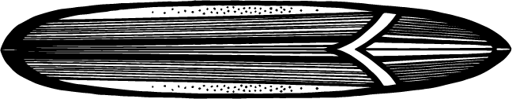

Why You Should Do Water Sports
What you'll discover in this post:
- üíß The story of how I discovered water sports
- üåä The different types of water sports
- üèÑ‚Äç‚ôÇÔ∏è What makes each sport unique
- üîÄ Why mixing different water sports is the ultimate hack
- ü߆ The benefits of water sports for your body and mind
- üß© A quiz to find the perfect sport for you!
My Journey — And Yours
I started water sports when I was a teenager. My first love was windsurfing feeling the pull of the sail and racing across the water. Later, I discovered kitesurfing, which I taught for nearly 20 years. It was a perfect mix of wind and control, a technical dance between you and nature. After that came surfing more raw, more about feeling and less about gear. Now I just love playing with the waves, sometimes even without a board bodysurfing reminds you that your body is enough.
But this isn’t just a story about me. It’s about you. Maybe you’re curious about which sport could open the door for you. Here’s a breakdown of some options.
Types of Water Sports & What Makes Each One Unique üåä
Kitesurfing

A technical, dynamic sport that combines wind power and water navigation. You'll learn kite control, board balance, and aerial movements. Great for thril seekers and fast learners.
What makes it unique: Kitesurfing is a dance with the wind. You’re not just riding waves you’re flying above them. It’s fast, exhilarating, and perfect for those who love gear, adrenaline, and the sensation of freedom in the air.
Surfing

More about flow and reading waves. You don't rely on equipment beyond a board. It’s meditative, yet physically intense. Surfing teaches patience and timing.
What makes it unique: Surfing connects you deeply to the rhythm of the ocean. It’s about feel, timing, and grace. No motors, no sails just you and the perfect wave. It's as pure and soulful as it gets.
Wing Foil

A mix between surfing and kiting. You hold a wing and ride on a foil board. It’s futuristic, light, and almost like flying a completely new sensation on water.
What makes it unique: Wing foiling is like gliding on air. The hydrofoil lifts you above the water while the handheld wing gives you power and freedom. It feels smooth, weightless, and incredibly fun for adventurers and early adopters.
Body Surfing

Minimalist and pure. No board, no kite just you and the ocean. You learn to move with the wave and use your body as the vehicle. It's fun, playful, and accessible to everyone.
What makes it unique: Body surfing is all about instinct. It’s the most natural way to ride waves no equipment, just timing, positioning, and joy. It’s spontaneous, raw, and endlessly playful.
Mix It Up. Why Combining Water Sports Is Awesome üå§Ô∏è
One of the best parts of getting into water sports is the flexibility they offer. Each day on the ocean is different and having a few skills under your belt means you can always make the most of it:
- üí® Windy day? Grab your kite or wing and fly across the water!
- üåä Waves but no wind? Time to ride them with your surfboard or even just your body.
- üå™Ô∏è Messy conditions? That‚Äôs perfect for body surfing no gear needed, just play and connect with the sea.
Tarifa is one of the best places in the world to explore this variety. Known as the wind capital of Europe, it delivers a mix of conditions that keeps every day fresh. On light wind days with Poniente, kite foiling or wing foiling are your go to smooth, efficient, and perfect for maximizing every breeze. When the Levante kicks in strong, it's game on for big jumps, fast rides, and pure adrenaline with your kite or wing.
And if things get stormy or chaotic, with choppy water and unpredictable gusts? That’s when the magic of body surfing comes in no equipment needed, just you embracing the ocean’s raw power. Tarifa teaches you to adapt, flow, and find joy in every condition. It’s not just about mastering one sport it’s about learning to read the sea and letting it guide your session.
The Benefits of Water Sports üí™
Water sports are more than fun they’re therapy for your body and mind. Here’s what happens:
- üèÉ‚Äç‚ôÄÔ∏è Fullbody workout: improves endurance, flexibility, and strength.
- ü߆ Mental clarity: releases dopamine and endorphins nature‚Äôs happy chemicals.
- üåä Cold water boosts immunity and circulation it‚Äôs a natural cold plunge!
- üí® Saltwater clears your sinuses and skin, leaving you fresh and energized.
- ⚡ Adrenaline rush sharpens your focus and decision-making.
- ☀️ Outdoor exposure increases Vitamin D and boosts your mood.